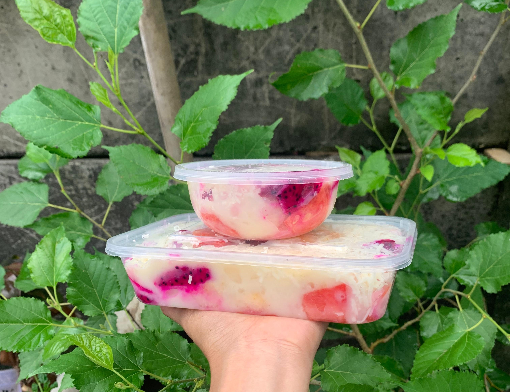

Tentang Kami
Kami berdedikasi untuk menghadirkan salad sehat, segar, dan berkualitas untuk gaya hidup modern.
2020
Mulai Berdiri
95%
Pelanggan Puas
1.000+
Salad Terjual
Visi
Menjadi brand salad lokal terdepan yang dipercaya masyarakat untuk hidup sehat dan penuh energi setiap hari.
|
Misi
- Menghadirkan salad sehat dengan bahan segar dan alami.
- Memberikan pelayanan terbaik kepada pelanggan.
- Mendukung gaya hidup sehat masyarakat Indonesia.
Alur Pembuatan Salad
1
Pemilihan Buah Segar
Kami memilih buah berkualitas dari supplier terpercaya setiap hari.
2
Pencucian & Persiapan
Buah dicuci bersih dengan air matang dan dipotong sesuai standar.
3
Peracikan
Buah, topping, dan dressing disusun sesuai pesanan dan resep.
4
Kemasan Higienis
Salad dikemas dalam box food grade agar tetap segar & aman.
Mengapa Harus Membeli di Kami?
- ✅ Buah selalu segar dan berkualitas
- ✅ Tanpa pengawet, aman dikonsumsi setiap hari
- ✅ Harga terjangkau dan porsi melimpah
- ✅ Respon cepat & layanan pelanggan ramah
Alamat Kami
Karanglo Rt05/08, Madegondo, Grogol, Sukoharjo
